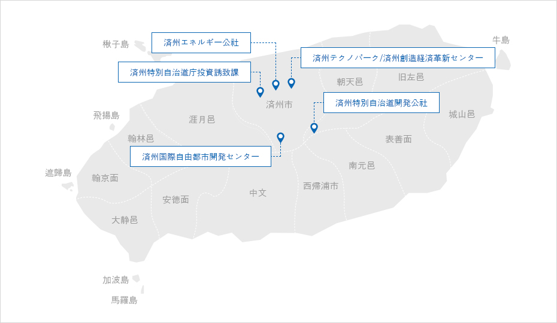
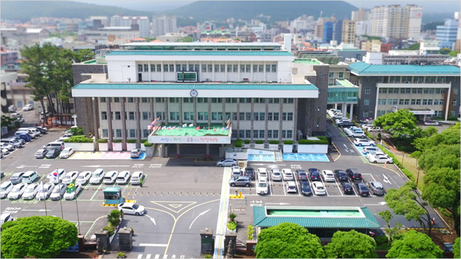
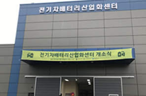

支援機関情報
- Home
- 投資環境
- 支援機関情報
済州支援機関情報



済州特別自治道庁 観光局投資誘致課

- 住所 : (63122)済州特別自治道庁 済州市文淵路6(連洞) / 6, Munyeon-ro, Jeju-si, Jeju-do, 63122
- お問い合わせ : +82-64-710-3372 ~ 5 / zheng@korea.kr
国際自由都市済州の投資誘致政策の樹立と国内外の投資誘致活動を行う投資誘致担当部署です。
投資相談、インセンティブの提供及び投資家の投資成功のための事後管理まで、国内外の投資家向けのトータルマネジメントサービスを提供します。
観光局投資誘致課
-
投資政策チーム
- 投資政策の樹立
- 投資振興地区
- 外国人投資地域
- 不動産投資移民制度の管理
-
投資誘致チーム
- 国内企業の誘致及び広報
- 国内企業への投資インセンティブの支援
- 国外投資の誘致及び広報
- 国外企業への投資インセンティブの支援
-
観光地開発チーム
- 韓国開発事業の承認及び管理
-
遊園地開発チーム
- 遊園地開発事業の承認及び管理

済州特別自治道庁未来戦略局

- 住所 : (63125) 済州特別自治道 済州市新大路64
- ホームページ : https://www.jeju.go.kr/group/part29/dept/org.htm
제주済州特別自治道庁未来戦略局
-
低炭素政策課
- - 炭素のない島、CFI2030プロジェクト
- - 公共主導の海上風力
- - エネルギー自立村の造成
- - 電気自動車関連産業の育成及び普及
-
未来戦略課
- 済州第4次産業革命対応産業生態系の造成
- 済州第4次産業革命ファンドの運営
- ICT新産業の育成
- ブロックチェーン産業の育成
- 済州化粧品産業の育成
- 新技術スタートアップの育成
- 微生物資源の産業化
-
デジタル融合課
- ビックデータ産業生態系の造成
- 済州データハブの構築
- データ基盤IoTプラットフォームの構築
- スマートドローン
- ドローン規制サンドボックス&特別自由化区域
- ICT企業の育成及び支援

済州国際自由都市開発センター(Jeju Free International City Development Center)
済州国際自由都市造成の担当機構として設立された国土交通部傘下の国の公企業です。
先端科学、観光、教育、医療、クリーン産業など国際自由都市造成のための中核産業を推進します。

- 済州国際自由都市開発センター ホームページ : https://www.jdcenter.com
済州エネルギー公社
済州の無限のエコエネルギー資源を活用して新再生エネルギーインフラの造成、生産、運営、供給、そしてR&Dまで公共主導の新再生エネルギー発電事業を推進する公企業です。
済州のエネルギー自立のためのCARBON FREE ISLAND 2030の中核プロジェクトを担当します。


- 済州エネルギー公社 ホームページ : https://www.jejuenergy.or.kr

-

 東北・北村風力発電団地
東北・北村風力発電団地
-

 公共施設活用太陽光発電団地
公共施設活用太陽光発電団地
-

 新昌風力発電団地
新昌風力発電団地
-
 金寧風力発電団地
金寧風力発電団地
-

 杏源風力・太陽光発電団地
杏源風力・太陽光発電団地
新再生エネルギー広報館 -

 加時里風力・ 橋来里太陽光発電団地
加時里風力・ 橋来里太陽光発電団地
済州特別自治道開発公社(JPDC)
済州の地下水を開発して韓国のミネラルウォーター市場1位ブランド「三多水」を生産する済州の公企業です。

- 済州特別自治道開発公社 ホームページ : http://www.jpdc.co.kr
済州特別自治道開発公社の主要プロジェクト
ミネラルウォーター事業
- 韓国のミネラルウォーター市場シェア1位 42％
- 韓国のミネラルウォータートップブランド<三多水>
- 年間83万トンの生産工場及びR&Dセンターの運営

みかん加工事業
- 済州みかん濃縮液加工工場(700トン/1日処理)の運営
- ［済州三多水みかんジューズ］ブランドの開発
研究開発事業
- 済州地下水の保全、管理、品質研究開発事業
公共住宅事業
- 済州島民のための住宅賃貸事業
※ 関連リンク : http://www.jpdc.co.kr/samdasoo/index.htm
済州テクノパーク (Jeju Techno Park)
企業に必要な技術開発、事業化支援、マーケティング、人材養成のような済州の産業発展と企業の成長支援ソリューションを提供する機関です。
済州の多様な産業に対する情報や技術開発、企業支援プログラムなど企業に必要なサービスと情報を提供します。
- 済州テクノパーク ホームページ : http://www.jejutp.or.kr
済州テクノパーク運営施設の現況
-
 バイオ融合センター
バイオ融合センター
- 済州クリーン化粧品食品産業化の支援
-

 デジタル融合センター
デジタル融合センター
- 済州 ICT企業の支援
- 済州ビックデータセンターの運営
-
 溶岩海水産業化支援センター
溶岩海水産業化支援センター
- http://www.jejulavawater.com
-

 生物種多様性研究所
生物種多様性研究所
- 済州亜熱帯生物資源産業化の研究
-

 エネルギー融合センター
エネルギー融合センター
- 済州 ICT企業の支援
- 済州ビックデータセンターの運営
-
 本社
本社
- 済州の企業支援及び産業育成
済州創造経済革新センター (JEJU Center for Creative Economy & Innovation)
済州のスタートアップ生態系の造成を担当している済州初のスタートアップ支援機関です。
済州のスタートアップと投資支援関連情報を提供します。

- 済州創造経済革新センター ホームページ : http://jccei.kr
主要プログラム
- スタートアップの入居及びインキュベーション支援
- インキュベーションプログラムの運営
- シードマネー投資事業
- 在留支援プログラム、リモートワークプログラムの運営
- スタートアップ支援及び教育プログラムの常時運営